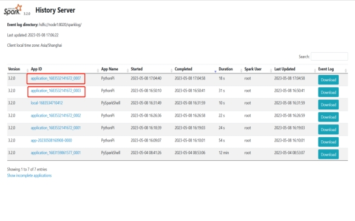
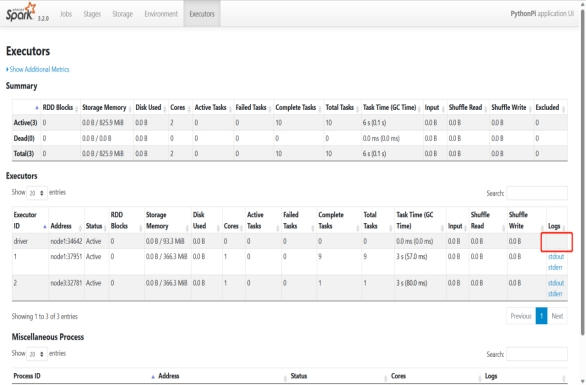
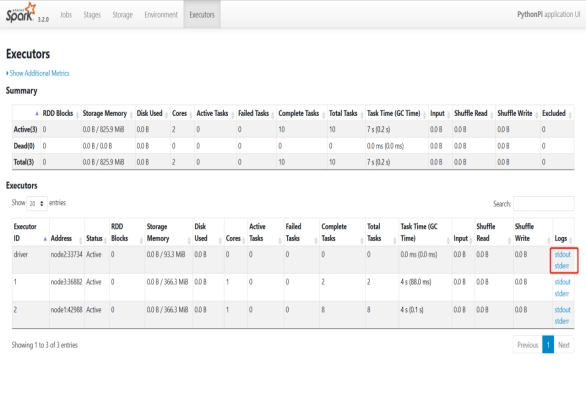

（1）Client模式中driver运行在客户端，在客户端显示输出结果，但是在spark历史服务器不显示logs信息。
（2）Cluster模式中driver运行在YARN容器内部，和ApplicationMaster在同一个容器内，在客户端不显示输出结果，所以在spark历史服务器中显示logs的信息。

（3）client模式测试
bin/spark-submit –master yarn –deploy-mode client –driver-memory 512m ${SPARK_HOME}/examples/src/main/python/pi.py 10

（4） cluster模式测试
bin/spark-submit –master yarn –deploy-mode cluster –driver-memory 512m --conf “spark.pyspark.driver.python=/export/server/anaconda3
/bin/python3” --conf “spark.pyspark.python=/export/server/anaconda3
/bin/python3” ${SPARK_HOME}/examples/src/main/python/pi.py 10
